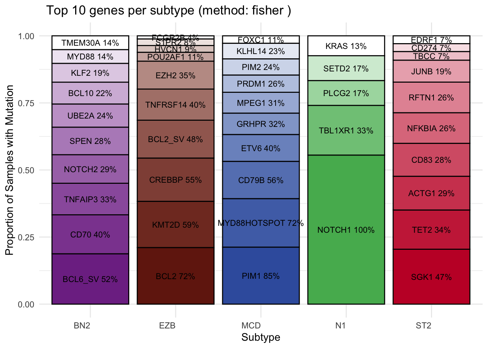
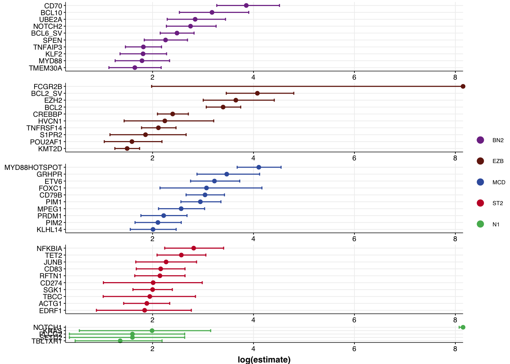
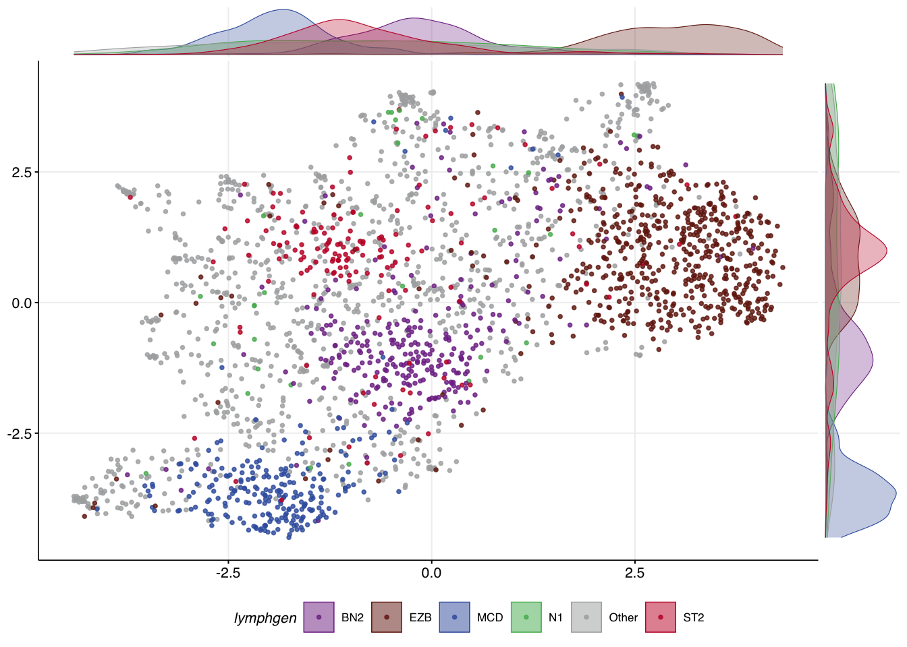
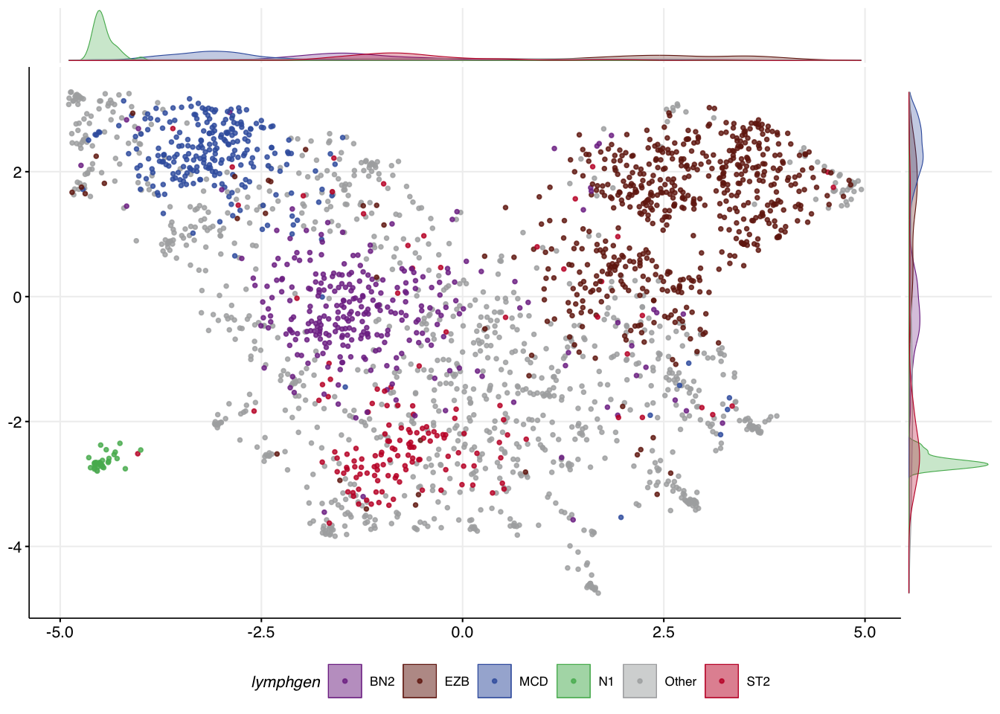

mutation_status <- readr::read_tsv(system.file("extdata/all_full_status.tsv",package = "GAMBLR.predict")) %>%
tibble::column_to_rownames("sample_id")
dlbcl_meta <- readr::read_tsv(system.file("extdata/dlbcl_meta_with_dlbclass.tsv",package = "GAMBLR.predict"))
dlbcl_meta_clean <- filter(dlbcl_meta,
lymphgen %in% c("MCD","EZB","BN2","N1","ST2","Other"))Exploring and selecting features
Preamble
GAMBLR.predict comes bundled with data that can be used to explore the genetic features that are associated with DLBCL genetic subgroups. The code below loads the two bundled files that will be needed for these examples.
Determining features relevant to a classification
To create your own classifier, you will need to know what features are relevant. This can be done through a post-hoc analysis of classified data, searching for genetic features that are significantly over-represented in individual classes. posthoc_feature_enrichment accomplishes this using Fisher’s exact test or Chi-square test. Frequencies and differences can be visualized with bar plots and forest plots. The required inputs and some commonly used arguments are:
sample_metadataData frame containing sample metadata with class labels. Normally, this would be the bundled training metadata.featuresFeature matrix with one row per sample and one column per mutation feature. Normally, this would be the bundled training mutation matrix (i.e.,mutation_statusper the code shown above)label_columnName of the column containing the class labels (default: “lymphgen”). You should rarely/never need to change this unless working with a different training classifier.truth_classesVector of class labels to consider (default: BN2, EZB, MCD, ST2, N1). You should rarely/never need to change this unless working with a different training classifier.methodMethod to determine top features: “frequency” for most abundant features, “chi_square” for top differentially mutated features in the classes vs all other classes or “fisher” to compare in-class vs out-class feature frequency across all classes (default : “frequency”). Note: the forest plot is only generated when the method is either chi_square or fisher
plots<- posthoc_feature_enrichment(
sample_metadata = dlbcl_meta_clean,
features = mutation_status,
method = "fisher"
)View the stacked bar plot output:
plots$bar_plot
View the forest plot output:
plots$forest_plot
Subsetting to your selected features
Let’s assume you used outputs such as these to hand-select a set of features based on these analyses. The following code shows how the full feature set can be subset to your selected features.
my_features <- c(
"ACTB", "ACTG1", "BCL10", "BCL2", "BCL2L1",
"BCL6", "BIRC3", "BRAF", "BTG1", "BTG2",
"BTK", "CD19", "CD70", "CD79B", "CD83",
"CDKN2A", "CREBBP", "DDX3X", "DTX1", "DUSP2",
"EDRF1", "EIF4A2", "EP300", "ETS1", "ETV6",
"EZH2", "FAS", "FCGR2B", "FOXC1", "FOXO1",
"GNA13", "GRHPR", "HLA-A", "HLA-B", "HNRNPD",
"IRF4", "IRF8", "ITPKB", "JUNB", "KLF2",
"KLHL14", "KLHL6", "KMT2D", "MEF2B", "MPEG1",
"MYD88", "NFKBIA", "NFKBIE", "NFKBIZ", "NOL9",
"NOTCH1", "NOTCH2", "OSBPL10", "PIM1", "PIM2",
"PRDM1", "PRDM15", "PRKDC", "PRRC2C", "PTPN1",
"RFTN1", "S1PR2", "SETD1B", "SGK1", "SOCS1",
"SPEN", "STAT3", "STAT6", "TBCC", "TBL1XR1",
"TET2", "TMEM30A", "TMSB4X", "TNFAIP3", "TNFRSF14",
"TOX", "TP53", "TP73", "UBE2A", "WEE1",
"XBP1", "ZFP36L1", "MYD88HOTSPOT", "BCL2_SV", "BCL6_SV"
)
selected_mutation_status <- mutation_status %>%
select(all_of(my_features))make_and_annotate_umap
It can be exremely useful to see how UMAP converts your feature space into a 2D representation. The make_and_annotate_umap function will generate an initial UMAP projection of your samples based on the mutation features provided to it. This is a foundational step for running DLBCLone. Importantly, when provided with the optional umap_out argument, it will project the same (or new) data to the locked latent representation in a deterministic way.
mu_all = make_and_annotate_umap(
selected_mutation_status,
dlbcl_meta_clean
)The convenience function make_umap_scatterplot allows you to view the result as a scatter plot, with marginal density plots that help show where the most dense representation of each class is across the X and Y axes. This can help you scrutinize how well samples of each class separate.
make_umap_scatterplot(mu_all$df)
Re-using an existing UMAP model
Under the hood, running make_and_annotate_umap with an existing model (provided via umap_out) will determine the coordinates for every sample in a deterministic way. This step iteratively places each sample into the same latent space using the model generated in the last step based on distances to all samples in your original training data. In this case, the location of other samples doesn’t influence where each sample is placed. As a result, the coordinates for each point are slightly different than the original UMAP but always identical whenever this function is re-run this way. This is important because it means the result will be deterministic regardless of the order in which you specify samples.
mu_all_proj = make_and_annotate_umap(
mu_all$features,
dlbcl_meta_clean,
umap_out = mu_all
)
make_umap_scatterplot(
mu_all_proj$df
)
Core features and meta-features
In addition to choosing different feature combinations, you may be able to achieve better separation of certain classes by assigning certain features a higher weight. This is accomplished by specifying a vector of feature names that will have their values multiplied by 1.5 using the core_features argument. This argument can also be used to specify how features will be grouped into meta-features.
meta_feats <- list(
ST2=c("SGK1","DUSP2","TET2","SOCS1"),
N1="NOTCH1",
EZB=c("EZH2","BCL2_SV"),
MCD=c("MYD88HOTSPOT","CD79B","PIM1"),
BN2=c("BCL6_SV","NOTCH2","SPEN","CD70")
)
mu_weighted = make_and_annotate_umap(
selected_mutation_status,
dlbcl_meta_clean,
core_features = meta_feats
)
make_umap_scatterplot(mu_weighted$df)